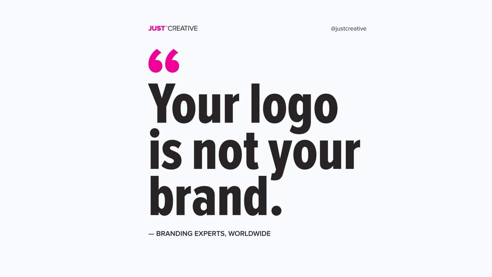
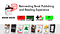

Your business is not about your logo


Don’t hustle your friend who is able to design a logo for you because you are eager to see the logo of your company or startup with fancy colors and shapes because your audience doesn't care about it at all. Nike is not about this curved shape neither Apple is about crunched Apple. Your audience cares about the change you make, the story you tell, how far you will push them, how many of their problems you will solve. Given all of this, the very first starting point is to know who is it for. Knowing who is it for defines the logo that will resonate with the stories they tell themselves and this logo can be a simple Helvetica font or one like the one below
Best logos are the simplest ones and very often emulates some things that your audience already knows and cares about. Best logo designers exploit analogy using the everyday objects that your audience uses or/and sees. When you are running a company or startup, you often believe that what you see and what you are building will be like a storm that will leave nothing on its way but know that it is never about what you see and what you are building but what your audience sees and what it wants you to build. This audience is not defined only by demographics but mainly by psychographic. The way this audience thinks and sees the world is way more important than the weight, height, or age of its members.
When we take the example of book Dojo the mail-only startup that publishes data-driven books and operates book-driven platforms, it is clear that Book dojo is not about this
but about you, a book lover who loves learning things and playing with ideas by using books as a medium for this purpose. Then this book designed like a ninja jaw doesn't define Book Dojo but what will define it is the quality of data-driven books that this mail-only startup will publish and book-driven platforms that it will operate. If they resonate with you then we could say that Book Dojo achieved its goal. You clearly see that this has nothing to do with the logo of Book Dojo.
The data-driven book entitled Gamestop, anatomy of a stock short bubble is very close to its publication date. Working on this chapter that deals with the relative valuation of GameStop using companies like twitch and Epic game. Once this chapter ready, we could say that we have a ready-to-publish data-driven book that only those who register using this link could read and play with the data that comes with it.
PS : Will soon start to publish stock analysis Articles in SeekingAlpha, you will be able to read them here
